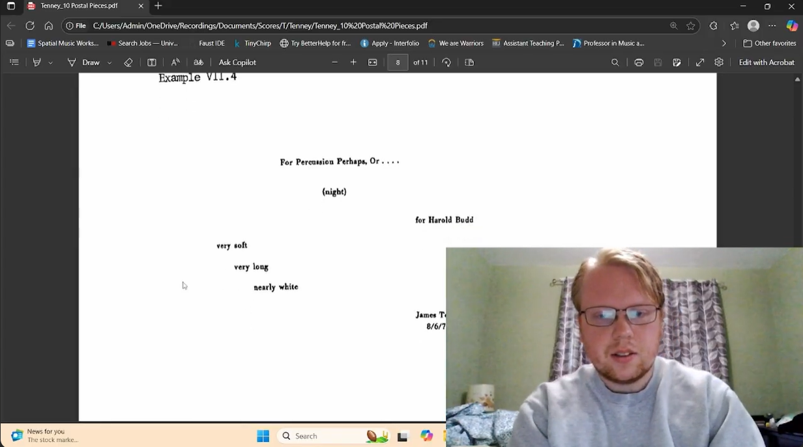

| Series | Composer | Title | Year | Recorded | Uploaded | ||
|---|---|---|---|---|---|---|---|
| 1 | String Quartet | ~ | James M. Creed | Seven Lines for the Ligeti Quartet | 2020 | 24.11.04 | 24.12.03 |
| 2 | String Quartet | ~ | Jon Christopher Nelson | Spinning Silence in the Possible Blue | 2016 | 24.11.05 | 24.12.04 |
| 3 | String Quartet | ~ | Javier Torres Maldonado | String Quartet N.2 (mvt 1) | 2015 | 24.11.06 | 24.12.05 |
| 4 | String Quartet | ~ | Ana Lara | Au-delà du visible | 2011 | 24.11.07 | 24.12.06 |
| 5 | String Quartet | ~ | Javier Torres Maldonado | String Quartet N.1 | 2009 | 24.11.08 | 24.12.07 |
| 6 | String Quartet | ~ | Germán Romero | String Quartet N.4 | 2006 | 24.11.09 | 24.12.08 |
| 7 | String Quartet | ~ | Ana Lara | Bhairav (first half) | 2000 | 24.11.10 | 24.12.09 |
| 8 | String Quartet | ~ | Mario Lavista | String Quartet N.6 | 1999 | 24.11.11 | 24.12.10 |
| 9 | String Quartet | ~ | Germán Romero | String Quartet N.2 | 1999 | 24.11.12 | 24.12.11 |
| 10 | String Quartet | ~ | Germán Romero | String Quartet N.3 | 1999 | 24.11.13 | 24.12.12 |
| 11 | String Quartet | ~ | Mario Lavista | String Quartet N.5 | 1998 | 24.11.14 | 24.12.13 |
| 12 | String Quartet | ~ | Mario Lavista | String Quartet N.4 | 1996 | 24.11.15 | 24.12.14 |
| 13 | String Quartet | ~ | Helmut Lachenmann | String Quartet N.2 | 1989 | 24.11.16 | 24.12.15 |
| 14 | String Quartet | ~ | Helmut Lachenmann | String Quartet N.1 | 1972 | 24.11.17 | 24.12.16 |
| 15 | String Quartet | ~ | Beat Furrer | String Quartet N.1 | 1984 | 24.11.18 | 24.12.17 |
| 16 | String Quartet | ~ | Giacinto Scelsi | String Quartet N.4 | 1964 | 24.11.19 | 24.12.18 |
| 17 | String Quartet | ~ | Alfred Schnittke | String Quartet N.3 | 1983 | 24.11.20 | 24.12.19 |
| 18 | String Quartet | ~ | Alfred Schnittke | String Quartet N.2 | 1980 | 24.11.21 | 24.12.20 |
| 19 | String Quartet | ~ | Mario Lavista | String Quartet N.1 | 1969 | 24.11.22 | 24.12.21 |
| 20 | String Quartet | ~ | Earle Brown | String Quartet | 1965 | 24.11.23 | 24.12.22 |
| 21 | String Quartet | ~ | Benjamin Britten | String Quartet N.2 | 1945 | 24.11.24 | 24.12.23 |
| 22 | String Quartet | ~ | Béla Bartók | String Quartet N.5 | 1934 | 24.11.25 | 24.12.24 |
| 23 | String Quartet | ~ | Béla Bartók | String Quartet N.4 | 1928 | 24.11.26 | 24.12.25 |
| 24 | String Quartet | ~ | Igor Stravinsky | Three Pieces | 1914 | 24.11.27 | 24.12.26 |
| 25 | String Quartet | ~ | Mario Lavista | String Quartet N.2 | 1984 | 24.11.28 | 24.12.27 |
| 26 | String Quartet | ~ | Victor Rangel | Morrisby's Gum | 2022 | 24.11.29 | 24.12.28 |
| 27 | String Quartet | electronics | João Pedro Oliveira | Labirinto | 2001 | 24.11.30 | 24.12.29 |
| 28 | String Quartet | electronics | Steve Reich | Different Trains | 1988 | 24.12.01 | 24.12.30 |
| 29 | String Quartet | accordion | Javier Torres Maldonado | Luz | 2000 | 24.12.02 | 24.12.31 |
| 30 | Pierrot Ensemble | percussion, amplification | Patricia Alessandrini | Black is the colour... (ommagio a Berio) | 2012 | 24.12.03 | 25.01.01 |
| 31 | Pierrot Ensemble | ~ | Ana Lara | Y los oros la luz | 2008 | 24.12.04 | 25.01.02 |
| 32 | Pierrot Ensemble | 2 percussion | Kory Reeder | Messier | 2019 | 24.12.05 | 25.01.03 |
| 33 | Pierrot Ensemble | vibraphone | Franco Donatoni | Lumen | 1975 | 24.12.06 | 25.01.04 |
| 34 | Pierrot Ensemble | voice, percussion | Peter Maxwell Davies | Eight Songs for a Mad King | 1969 | 24.12.07 | 25.01.05 |
| 35 | Pierrot Ensemble | viola, percussion, electric guitar, electronics | Fausto Romitelli | Professor Bad Trip: Lesson 1 | 1998 | 24.12.08 | 25.01.06 |
| 36 | Pierrot Ensemble | ~ | Mohammed Amin Sharifi | Quintet N.2 | 2014 | 24.12.09 | 25.01.07 |
| 37 | Pierrot Ensemble | ~ | Gérard Grisey | Talea | 1986 | 24.12.10 | 25.01.08 |
| 38 | Pierrot Ensemble | percusssion | Christopher Cerrone | South Catalina | 2014 | 24.12.11 | 25.01.09 |
| 39 | Pierrot Ensemble | percussion | Javier Torres Maldonado | Hemisferios Artificiales | 2001 | 24.12.12 | 25.01.10 |
| 40 | Pierrot Ensemble | voice | Franco Donatoni | L'Ultima Sera | 1980 | 24.12.13 | 25.01.11 |
| 41 | Pierrot Ensemble | vibraphone | Pierre Boulez | Dérive | 1984 | 24.12.14 | 25.01.12 |
| 42 | Pierrot Ensemble | viola | Wenbin Lyu | Turbulent Mind | 2021 | 24.12.15 | 25.01.13 |
| 43 | Pierrot Ensemble | viola | André McEvenue | Capriccio | 2018 | 24.12.16 | 25.01.14 |
| 44 | Pierrot Ensemble | viola | Gérard Grisey | Vortex Temporum | 1995 | 24.12.17 | 25.01.15 |
| 45 | Pierrot Ensemble | percussion | Hilda Paredes | Homenaje a Remedios Varo | 1995 | 24.12.18 | 25.01.16 |
| 46 | Pierrot Ensemble | viola, percussion | Beat Furrer | gaspra | 1989 | 24.12.19 | 25.01.17 |
| 47 | Violin & Piano | ~ | José Julio Díaz Infante | Píolin | 2015 | 24.12.20 | 25.01.18 |
| 48 | Violin & Piano | ~ | Beat Furrer | Lied | 1993 | 24.12.21 | 25.01.19 |
| 49 | Violin & Piano | ~ | Arvo Pärt | Fratres | 1980 | 24.12.22 | 25.01.20 |
| 50 | Violin & Piano | ~ | Salvatore Sciarrino | Sonatina | 1975 | 24.12.23 | 25.01.21 |
| 51 | Violin & Piano | ~ | Alfred Schnittke | Stille Nacht | 1978 | 24.12.24 | 25.01.22 |
| 52 | Violin & Piano | ~ | Alfred Schnittke | Sonata N.2 | 1968 | 25.12.26 | 25.01.23 |
| 53 | Violin & Piano | ~ | Charles Ives | Sonata N.4 | 1915 | 25.12.27 | 25.01.24 |
| 54 | Violin & Piano | ~ | Charles Ives | Sonata N.2 | 1910 | 25.12.28 | 25.01.25 |
| 55 | Violin & Piano | electronics | Yoshihiro Kanno | Star Curve | 2010 | 25.12.29 | 25.01.26 |
| 56 | Chamber Orchestra | voice | Philippe Leroux | Ailes | 2012 | 25.01.01 | 25.01.27 |
| 57 | Chamber Orchestra | ~ | Jacques Zafra | Smog | 2012 | 25.01.02 | 25.01.28 |
| 58 | Chamber Orchestra | ~ | Milica Djordjević | The Firefly in a Jar | 2007 | 25.01.03 | 25.01.29 |
| 59 | Chamber Orchestra | electronics | Javier Torres Maldonado | El suspiro del angel | 2006 | 25.01.04 | 25.01.30 |
| 60 | Chamber Orchestra | voice | Salvatore Sciarrino | Quaderno Di Strada | 2003 | 25.01.05 | 25.01.31 |
| 61 | Chamber Orchestra | horn | György Ligeti | Hamburg Concerto | 2004 | 25.01.06 | 25.02.01 |
| 62 | Chamber Orchestra | ~ | Javier Torres Maldonado | Exabrupto | 1998 | 25.01.07 | 25.02.02 |
| 63 | Chamber Orchestra | voice | Gérard Grisey | Quatre chants pour franchir le seuil | 1998 | 25.01.08 | 25.02.03 |
| 64 | Chamber Orchestra | violin | Philippe Leroux | (d')Aller | 1996 | 25.01.09 | 25.02.04 |
| 65 | Chamber Orchestra | electronics | Kaija Saariaho | Lichtbogen | 1986 | 25.01.10 | 25.02.05 |
| 66 | Chamber Orchestra | sorpano, mezzo-soprano, tenor, baritone, female chorus | Victor Rasgado | Anacleto Morones | 1991 | 25.01.11 | 25.02.06 |
| 67 | Chamber Orchestra | ~ | John Zorn | for your eyes only | 1989 | 25.01.12 | 25.02.07 |
| 68 | Chamber Orchestra | electronics | Jonathan Harvey | Bhakti | 1982 | 25.01.13 | 25.02.08 |
| 69 | Chamber Orchestra | ~ | Salvatore Sciarrino | Introduzione All'Oscuro | 1981 | 25.01.14 | 25.02.09 |
| 70 | Chamber Orchestra | mezzo-soprano, tenor, 2 baritones, bass | Peter Maxwell Davies | The Martyrdom of St. Magnus | 1976 | 25.01.15 | 25.02.10 |
| 71 | Chamber Orchestra | ~ | Gérard Grisey | Partiels | 1975 | 25.01.16 | 25.02.11 |
| 72 | Chamber Orchestra | ~ | György Ligeti | Kammerkonzert | 1970 | 25.01.17 | 25.02.12 |
| 73 | Chamber Orchestra | ~ | Charles Ives | The Unanswered Question | 1908 | 25.01.18 | 25.02.13 |
| 74 | Chamber Orchestra | ~ | Philippe Leroux | Total SOlo | 2014 | 25.01.19 | 25.02.14 |
| 75 | Chamber Orchestra | sampler | Simon Steen-Andersen | Chambered Music | 2007 | 25.01.20 | 25.02.15 |
| 76 | Chamber Orchestra | electric guitar, sampler | Fausto Romitelli | Green, Yellow and Blue | 2003 | 25.01.21 | 25.02.16 |
| 77 | Chamber Orchestra | electronics | Tristan Murail | Désintégrations | 1982 | 25.01.22 | 25.02.17 |
| 78 | Chamber Orchestra | ~ | Anton Webern | Symphony (mvt 2) | 1928 | 25.01.23 | 25.02.18 |
| 79 | Orchestra | ~ | Eugene Astapov | Burial Rites | 2023 | 25.01.24 | 25.02.19 |
| 80 | Orchestra | ~ | Julia Wolfe | Pretty | 2023 | 25.01.26 | 25.02.21 |
| 81 | Orchestra | ~ | Lauren Greenberg | Bonds of Cosmic Origin | 2022 | 25.01.28 | 25.02.23 |
| 82 | Orchestra | ~ | Tom Lachance | Blizzard-Sylvestre | 2022 | 25.01.30 | 25.02.25 |
| 83 | Orchestra | ~ | Kory Reeder | Still Life, In Brief | 2020 | 25.02.01 | 25.02.27 |
| 84 | Orchestra | ~ | Courtney Bryan | Bridges | 2019 | 25.02.03 | 25.03.01 |
| 85 | Orchestra | ~ | Anna Clyne | Restless Oceans | 2019 | 25.02.05 | 25.03.03 |
| 86 | Orchestra | ~ | Kory Reeder | Walls of Brocade Fields | 2019 | 25.02.07 | 25.03.05 |
| 87 | Orchestra | ~ | Haralabos Stafylakis | Holocene Extinction | 2017 | 25.02.09 | 25.03.07 |
| 88 | Orchestra | ~ | Missy Mazzoli | River Rouge Transfiguration | 2013 | 25.02.11 | 25.03.09 |
| 89 | Orchestra | ~ | Jacques Zafra | Todo para el ultimo momento | 2013 | 25.02.13 | 25.03.11 |
| 90 | Orchestra | ~ | Germán Romero | Mares | 2011 | 25.02.15 | 25.03.13 |
| 91 | Orchestra | ~ | José Julio Díaz Infante | Sator Arepo Tenet Opera Rotas | 2010 | 25.02.17 | 25.03.15 |
| 92 | Orchestra | electronics | Jonathan Harvey | Speakings | 2008 | 25.02.19 | 25.03.17 |
| 93 | Orchestra | ~ | Wolfgang Rhim | Jagden und Formen | 2008 | 25.02.21 | 25.03.19 |
| 94 | Orchestra | ~ | Yoshihiro Kanno | Northwest Current | 2007 | 25.02.23 | 25.03.21 |
| 95 | Orchestra | electronics | Mark Andre | "...auf..."III | 2007 | 25.02.25 | 25.03.23 |
| 96 | Orchestra | light | Georg Fredreich Haas | Hyperion | 2006 | 25.02.27 | 25.03.25 |
| 97 | Orchestra | electronics | Javier Torres Maldonado | Esferal | 2006 | 25.03.01 | 25.03.27 |
| 98 | Orchestra | electric guitar, sampler | Fausto Romitelli | Dead City Radio I. Audiodrome | 2004 | 25.03.03 | 25.03.29 |
| 99 | Orchestra | ~ | Marc-André Dalbavie | Color | 2003 | 25.03.05 | 25.03.31 |
| 100 | Orchestra | ~ | Germán Romero | Laberinto | 2001 | 25.03.07 | 25.04.02 |
| 101 | Orchestra | ~ | Pascal Dusapin | Clam | 1998 | 25.03.09 | 25.04.04 |
| 102 | Orchestra | ~ | Jonathan Harvey | Tranquil Abiding | 1998 | 25.03.11 | 25.04.06 |
| 103 | Orchestra | ~ | Victor Rasgado | Alebrijes (Mvt 1) | 1995 | 25.03.13 | 25.04.08 |
| 104 | Orchestra | ~ | Ana Lara | Angeles del Llama y Hielo | 1994 | 25.03.15 | 25.04.10 |
| 105 | Orchestra | ~ | Victor Rasgao | Quetzeltepec | 1994 | 25.03.17 | 25.04.12 |
| 106 | Orchestra | piano | Valentin Sylvestrov | Metamusik | 1992 | 25.03.19 | 25.04.14 |
| 107 | Orchestra | flute, clarinet, piano | Beat Furrer | Face de la chaleur | 1990 | 25.03.21 | 25.04.16 |
| 108 | Orchestra | choir | Henryk Gorecki | Beatus Vir | 1979 | 25.03.23 | 25.04.18 |
| 109 | Orchestra | ~ | Gérard Grisey | Modulations | 1978 | 25.03.25 | 25.04.20 |
| 110 | Orchestra | optional choir | Henry Brant | Antiphony I | 1953 | 25.03.27 | 25.04.22 |
| 111 | Orchestra | ~ | Pierre Boulez | Rituel | 1975 | 25.03.29 | 25.04.24 |
| 112 | Orchestra | ~ | Earle Brown | Cross Sections and Color Fields | 1975 | 25.03.31 | 25.04.26 |
| 113 | Orchestra | ~ | György Ligeti | Melodien | 1971 | 25.04.02 | 25.04.28 |
| 114 | Orchestra | ~ | Krzyzstof Penderecki | De Natura Sonoris N.2 | 1971 | 25.04.04 | 25.04.30 |
| 115 | Orchestra | ~ | Silvestre Revueltas | Redes | 1936 | 25.04.06 | 25.05.02 |
| 116 | Orchestra | ~ | Earle Brown | Module N.1, N.2 & N.3 | 1969 | 25.04.08 | 25.05.04 |
| 117 | Orchestra | ~ | Krzyzstof Penderecki | De Natura Sonoris N.1 | 1968 | 25.04.10 | 25.05.06 |
| 118 | Orchestra | ~ | George Crumb | Echoes of Time and the River | 1968 | 25.04.12 | 25.05.08 |
| 119 | Orchestra | choir | Arvo Pärt | Credo | 1968 | 25.04.14 | 25.05.10 |
| 120 | Orchestra | electronics | Karlheinz Stockhausen | Mixtur | 1964 | 25.04.16 | 25.05.12 |
| 121 | Variable | ~ | Terry Riley | in C | 1964 | 25.04.18 | 25.05.14 |
| 122 | Orchestra | 2 orchestras | Karllheinz Stockhausen | Gruppen | 1957 | 25.04.20 | 25.05.16 |
| 123 | Orchestra | ~ | Olivier Messiaen | Chronochromie | 1960 | 25.04.22 | 25.05.18 |
| 124 | Orchestra | ~ | Iannis Xenakis | Metastaesis | 1954 | 25.04.24 | 25.05.20 |
| 125 | Orchestra | piano | Olivier Messiaen | Réveil des oiseux | 1953 | 25.04.26 | 25.05.22 |
| 126 | Orchestra | ~ | Olivier Messiaen | Turangalîla-Symphonie | 1948 | 25.04.28 | 25.05.24 |
| 127 | Orchestra | ~ | Carlos Chávez | Sinfonia India | 1936 | 25.04.30 | 25,05.26 |
| 128 | Orchestra | ~ | Jose Pablo Moncayo | Huapango | 1941 | 25.05.02 | 25.05.28 |
| 129 | Orchestra | ~ | Luigi Nono | Variazioni Canoniche | 1950 | 25.05.04 | 25.05.31 |
| 130 | Orchestra | ~ | Sergei Prokofiev | Symphony N.5 | 1944 | 25.05.06 | 25.06.01 |
| 131 | Orchestra | ~ | Anton Webern | Variationen | 1940 | 25.05.08 | 25.06.03 |
| 132 | Orchestra | ~ | Silvestre Revueltas | Sensemayá | 1937 | 25.05.10 | 25.06.05 |
| 133 | Orchestra | Soprano, Tenor, Baritone, Choir | Carl Orff | Carmina Burana | 1936 | 25.05.12 | 25.06.07 |
| 134 | Chamber Orchestra | ~ | Silvestre Revueltas | Homenaje a Frederico Garcia Lorca | 1936 | 25.05.14 | 25.06.09 |
| 135 | Orchestra | ~ | Silvestre Revueltas | Janitzio | 1933 | 25.05.16 | 25.06.11 |
| 136 | Orchestra | ~ | Carlos Chávez | Los Cuatro Soles | 1925 | 25.05.18 | 25.06.13 |
| 137 | Orchestra | 6 buccine, fixed media | Ottorino Respighi | Pines of Rome | 1924 | 25.05.20 | 25.06.15 |
| 138 | Orchestra | ~ | Igor Stravinsky | The Rite of Spring | 1913 | 25.05.22 | 25.06.17 |
| 139 | Orchestra | alto saxophone | Henry Cowell | Air and Scherzo | 1963 | 25.05.24 | 25.06.19 |
| 140 | Orchestra | baritone saxophone | Georg Fredreich Haas | Konzert | 2008 | 25.05.26 | 25.06.21 |
| 141 | Orchestra | cello | Francesco Filidei | Ogni gesto d'amore | 2009 | 25.05.28 | 25.06.23 |
| 142 | Orchestra | cello | Georg Fredreich Haas | Konzert | 2004 | 25.05.31 | 25.06.25 |
| 143 | Orchestra | choir, actress | Beat Furrer | Fama | 2005 | 25.06.01 | 25.06.27 |
| 144 | Orchestra | choir, soprano, viola, percussion | Kory Reeder | Codex Symphonia | 2021 | 25.06.03 | 25.06.29 |
| 145 | Orchestra | guzeng, oud | Wu Fei | Hello Gold Mountain | 2022 | 25.06.05 | 25.07.01 |
| 146 | Orchestra | 2 marimbas | Rob Halpner | Similar Differences | 2020 | 25.06.07 | 25.07.03 |
| 147 | Orchestra | mezzo-soprano | Kaija Saariaho | Adriana Songs | 2006 | 25.06.08 | 25.07.05 |
| 148 | Orchestra | piano, sampler, video | Simon Steen-Andersen | Concerto | 2014 | 25.06.15 | 25.07.07 |
| 149 | Orchestra | piano | Beat Furrer | Konzert | 2004 | 25.06.17 | 25.07.09 |
| 150 | Orchestra | piano | Morton Feldman | Piano and Orchestra | 1975 | 25.06.19 | 25.07.11 |
| 151 | Orchestra | piano, horn, xylorimba, glockenspiel | Olivier Messiaen | Des canyons aux etoiles... | 1974 | 25.06.21 | 25.07.13 |
| 152 | Orchestra | soprano | Claude Vivier | Lonely Child | 1980 | 25.06.23 | 25.07.15 |
| 153 | Orchestra | soprano, trombone | Pierluigi Billone | Bocca Kosmoi | 2007 | 25.06.25 | 25.07.17 |
| 154 | Orchestra | violin | Missy Mazzoli | Violin Concerto | 2022 | 25.06.27 | na |
| 155 | Orchestra | voice | Gustav Mahler | Kindertotenlieder | 1904 | 25.06.29 | 25.07.19 |
| 156 | Orchestra | violin | Javier Torres Maldonado | Obscurum Entianum Lumine | 2004 | 25.07.01 | 25.07.21 |
| 157 | Orchestra | vioin | Sophia Gubaidulina | Offertorium | 1980 | 25.07.03 | 25.07.23 |
| 158 | Orchestra | violin | Erich Wolfgang Korngold | Violin Concerto | 1945 | 25.07.05 | 25.07.25 |
| 159 | Orchestra | soprano | Arnold Schoenberg | Erwartung | 1923 | 25.07.07 | 25.07.27 |
| 160 | Orchestra | violin, amplified choir | Luciano Berio | Sinfonia | 1969 | 25.07.09 | 25.07.29 |
| 161 | Orchestra | voices, choir | Olivier Messiaen | Saint Francois d'Assise scene1 | 1983 | 25.07.11 | 25.07.31 |
| 162 | Orchestra | voices, choir | Olivier Messiaen | Saint Francois d'Assise scene2 | 1983 | 25.07.12 | 25.08.01 |
| 163 | Orchestra | voices, choir | Olivier Messiaen | Saint Francois d'Assise scene3 | 1983 | 25.07.13 | 25.08.02 |
| 164 | Orchestra | voices, choir | Olivier Messiaen | Saint Francois d'Assise scene4 | 1983 | 25.07.14 | 25.08.03 |
| 165 | Orchestra | voices, choir | Olivier Messiaen | Saint Francois d'Assise scene5 | 1983 | 25.07.15 | 25.08.04 |
| 166 | Orchestra | voices, choir | Olivier Messiaen | Saint Francois d'Assise scene6 | 1983 | 25.07.16 | 25.08.05 |
| 167 | Orchestra | voices, choir | Olivier Messiaen | Saint Francois d'Assise scene7 | 1983 | 25.07.17 | 25.08.06 |
| 168 | Orchestra | voices, choir | Olivier Messiaen | Saint Francois d'Assise scene8 | 1983 | 25.07.18 | 25.08.07 |
| 169 | Wind Quintet | ~ | Ana Lara | Aulós | 1993 | 25.07.19 | 25.08.08 |
| 170 | Wind Quintet | ~ | Kory Reeder | Erb Study | 2020 | 25.07.21 | 25.08.10 |
| 171 | Wind Quintet | ~ | Mario Lavista | Cinco danzas breves | 1994 | 25.07.23 | 25.08.12 |
| 172 | Wind Quintet | ~ | Victor Rasgado | Axolote | 1988 | 25.07.25 | 25.08.14 |
| 173 | Player Piano | ~ | Conlon Nancarrow | Study N.2 | 1950 | 25.07.27 | 25.08.16 |
| 174 | Player Piano | ~ | Conlon Nancarrow | Study N.3 | 1948 | 25.07.28 | 25.08.17 |
| 175 | Player Piano | ~ | Conlon Nancarrow | Study N.4 | 1951 | 25.07.29 | 25.08.18 |
| 176 | Player Piano | ~ | Conlon Nancarrow | Study N.5 | 1951 | 25.07.30 | 25.08.19 |
| 177 | Player Piano | ~ | Conlon Nancarrow | Study N.6 | 1951 | 25.07.31 | 25.08.20 |
| 178 | Player Piano | ~ | Conlon Nancarrow | Study N.7 | 1951 | 25.08.01 | 25.08.21 |
| 179 | Player Piano | ~ | Conlon Nancarrow | Study N.9 | 1951 | 25.08.02 | 25.08.22 |
| 180 | Player Piano | ~ | Conlon Nancarrow | Study N.10 | 1951 | 25.08.03 | 25.08.23 |
| 181 | Bass | ~ | Barak Perelman | grey, black, grey, yellow | 2023 | 25.08.05 | 25.08.25 |
| 182 | Bass | ~ | Rebecca Saunders | Fury | 2005 | 25.08.07 | 25.08.27 |
| 183 | Bass | ~ | James Tenney | BEAST | 1971 | 25.08.09 | 25.08.29 |
| 184 | Bass | ~ | Jacob Druckman | Valentine | 1969 | 25.08.11 | 25.08.31 |
| 185 | Bass | Electronics | Yoshihiro Kanno | A Tower of Sand | 2004 | 25.08.13 | 25.09.02 |
| 186 | Percussion | ~ | Iannis Xenakis | Rebonds | 1989 | 25.08.15 | 25.09.04 |
| 187 | Percussion | ~ | Per Nørgård | I Ching | 1982 | 25.08.17 | 25.09.06 |
| 188 | Percussion | ~ | Morton Feldman | The King of Denmark | 1964 | 25.08.19 | 25.09.08 |
| 189 | Percussion | Electronics | Kaija Saariaho | Six Japanese Gardens | 1993 | 25.08.21 | 25.09.10 |
| 190 | Percussion | ~ | James Tenney | For Percussion Perhaps Or... (night) | 1965 | 25.08.23 | 25.09.12 |
| 191 | Percussion | ~ | James Tenney | MAXIMUSIC | 1965 | 25.08.25 | 25.09.14 |
| 192 | Percussion | ~ | James Tenney | Having Never Written a Note for Percussion | 1971 | 25.08.27 | 25.09.16 |
| 193 | Percussion | ~ | Christian Wolff | Exercise 26 | 1988 | 25.08.29 | 25.09.18 |
| 194 | Percussion | ~ | Christian Wolff | Exercise 27 | 1988 | 25.08.31 | 25.09.20 |
| 195 | Percussion | Electronics | Matthew Burtner | Sxueak | 2008 | 25.09.02 | 25.09.22 |
| 196 | Percussion | ~ | Karlheinz Essl | Trois Cent Notes | 2019 | 25.09.04 | 25.09.24 |
| 197 | Percussion | Electronics | Dan VanHassel | Fracture | 2018 | 25.09.06 | 25.09.26 |
| 198 | Percussion | ~ | Christopher Poovey | Cybernetic Overload | 2018 | 25.09.08 | 25.09.28 |
| 199 | Percussion | Electronics | Christopher Poovey | Within Waves | 2020 | 25.09.10 | 25.09.30 |
| 200 | Percussion | Electronics | João Pedro Oliveira | Vox Sum Vitae | 2009 | 25.09.12 | 25.10.02 |
| 201 | Percussion | Electronics | Keith Kirchoff | oNe | 2013 | 25.09.14 | 25.10.04 |
| 202 | Piano | Harmonica | James M. Creed | Piano Studies 1-6 | 2021 | 25.09.15 | 25.10.05 |
| 203 | Piano | ~ | Matthew Lee Knowles | A Grateful Statue Dreams Brave | 2021 | 25.09.16 | 25.10.06 |
| 204 | Piano | ~ | Matthew Lee Knowles | FOR | 2021 | 25.09.17 | 25.10.07 |
| 205 | Piano | ~ | Matthew Lee Knowles | For Andrew | 2021 | 25.09.18 | 25.10.08 |
| 206 | Piano | ~ | Matthew Lee Knowles | For Bebe | 2021 | 25.09.19 | 25.10.09 |
| 207 | Piano | ~ | Matthew Lee Knowles | For Christopher Fox | 2021 | 25.09.20 | 25.10.10 |
| 208 | Piano | ~ | Matthew Lee Knowles | For Daniel Derahkshan | 2021 | 25.09.21 | 25.10.11 |
| 209 | Piano | ~ | Matthew Lee Knowles | For Gary | 2021 | 25.09.22 | 25.10.12 |
| 210 | Piano | ~ | Matthew Lee Knowles | For Harriet Vine | 2021 | 25.09.23 | 25.10.13 |
| 211 | Piano | ~ | Matthew Lee Knowles | For Ian | 2021 | 25.09.24 | 25.10.14 |
| 212 | Piano | ~ | Matthew Lee knowles | For Jeremy | 2021 | 25.09.25 | 25.10.15 |
| 213 | Piano | ~ | Matthew Lee knowles | For Jonathan | 2021 | 25.09.26 | 25.10.16 |
| 214 | Piano | ~ | Matthew Lee knowles | For Lily | 2021 | 25.09.27 | 25.10.17 |
| P | Viola | ~ | Claudio Spies | Canon for Stravinsky's Birthday 1961 | 1961 | 25.09.28 | 25.10.18 |
| P | Open | ~ | Vincent Persichetti | An Alleluia From and To Igor Stravinsky | 1971 | 25.09.28 | 25.10.18 |
| P | Open | ~ | Roman Haubenstock-Ramati | In Memoriam Igor Stravinsky | 1971 | 25.09.28 | 25.10.18 |
| P | Cello | ~ | Peter Racine Fricker | Sarabande: In Memoriam Igor Stravinsky | 1971 | 25.09.28 | 25.10.18 |
| P | Flute, Cello and Piano | ~ | Harvey Sollberger | Elegy for Igor Stavinsky | 1971 | 25.09.28 | 25.10.18 |
| P | Unclear | ~ | Kenneth Gaburo | DIRIGE (antiphonae) | 1971 | 25.09.28 | 25.10.18 |
| P | Unclear | ~ | Lizbeth Rymland | Antiphony 11 | 1993 | 25.09.28 | 25.10.18 |
| P | Unclear | ~ | Larry Polansky | No Replacement (85 Verses for Kenneth Gaburo) | 1993 | 25.09.28 | 25.10.18 |
| P | Narrator | ~ | Robert Paredes | Empty | 1993 | 25.09.28 | 25.10.18 |
| P | Unclear | ~ | John Cage | Tokyo Lecture | 1985 | 25.09.28 | 25.10.18 |
| P | Violin | ~ | Ellis B. Kohs | Canon IV from Fantasies, Intermezzi and Canonic Etudes on the Name Eudice Shapiro | 1985 | 25.09.28 | 25.10.18 |
| P | Soprano, Flute, Piano | Tape | Mildred Kayden | L'Homage and Collage a Ernst Krenek | 1985 | 25.09.28 | 25.10.18 |
| 215 | Piano | ~ | Matthew Lee Knowles | For Matt Geer | 2021 | 25.09.29 | 25.10.19 |
| 216 | Piano | ~ | Matthew Lee Knowles | For Michael Wookey | 2021 | 25.09.30 | 25.10.20 |
| 217 | Piano | ~ | Matthew Lee Knowles | For Sophia | 2021 | 25.10.01 | 25.10.21 |
| 218 | Piano | ~ | Matthew Lee Knowles | Happy Birthday Laurence Crane! | 2021 | 25.10.02 | 25.10.22 |
| 219 | Piano | ~ | Matthew Lee Knowles | KHL | 2021 | 25.10.03 | 25.10.23 |
| 220 | Piano | ~ | Matthew Lee Knowles | She Knew the Answer | 2021 | 25.10.04 | 25.10.24 |
| 221 | Piano | ~ | Matthew Lee Knowles | For AE, on their 30th Birthday | 2020 | 25.10.05 | 25.10.25 |
| 222 | Piano | ~ | Matthew Lee Knowles | For Frey | 2020 | 25.10.06 | 25.10.26 |
| 223 | Piano | ~ | Matthew Lee Knowles | For Martha | 2020 | 25.10.07 | 25.10.27 |
| 224 | Piano | ~ | Matthew Lee Knowles | Sinusoidal Triangulation | 2013 | 25.10.08 | 25.10.28 |
| 225 | Piano | ~ | Sergei Zagny | Barcarola | 2011 | 25.10.09 | 25.10.29 |
| 226 | Piano | ~ | Matthew Lee Knowles | Five Squared | 2010 | 25.10.10 | 25.10.30 |
| 227 | Piano | ~ | Matthew Lee Knowles | Caged: Disturbed Mind | 2009 | 25.10.11 | 25.10.31 |
| 228 | Piano | ~ | Matthew Lee Knowles | For Alan Turing | 2011 | 25.10.12 | 25.11.01 |
| 229 | Piano | ~ | Matthew Lee Knowles | In Memory of Kevin Mitchell | 2009 | 25.10.13 | 25.11.02 |
| 230 | Piano | ~ | Matthew Lee Knowles | After Marc Chan | 2008 | 25.10.14 | 25.11.03 |
| 231 | Piano | ~ | Matthew Lee Knowles | For Morton Feldman | 2008 | 25.10.15 | 25.11.04 |
| 232 | Piano | ~ | Matthew Lee Knowles | For Richard Glover | 2008 | 25.10.16 | 25.11.05 |
| 233 | Piano | ~ | Matthew Lee Knowles | Piano for Laurence Crane | 2008 | 25.10.17 | 25.11.06 |
| 234 | Piano | ~ | Matthew Lee Knowles | Rearrangement of a Beethoven Sonatina | 2008 | 25.10.18 | 25.11.07 |
| 235 | Piano | ~ | Matthew Lee Knowles | "Average 10" | 2007 | 25.10.19 | 25.11.08 |
| 236 | Piano | ~ | Matthew Lee Knowles | Pieces for Laurence Crane 1 - 12 | 2007 | 25.10.20 | 25.11.09 |
| 237 | Piano | ~ | Pascal Dusapin | Etudes | 2003 | 25.10.21 | 25.11.10 |
| 238 | Piano | ~ | Salvatore Sciarrino | 2 Notturni Crudeli | 2001 | 25.10.22 | 25.11.11 |
| 239 | Piano | ~ | George Crumb | Eine Kleine Mitternachtmusik | 2001 | 25.10.23 | 25.11.12 |
| 240 | Piano | ~ | Sergei Zagny | Bases | 2000 | 25.10.24 | 25.11.13 |
| 241 | Piano | ~ | Laurence Crane | 20th Century Music | 1999 | 25.10.25 | 25.11.14 |
| 242 | Piano | ~ | Salvatore Sciarrino | 2 Notturni | 1998 | 25.10.26 | 25.11.15 |
| 243 | Piano | ~ | Salvatore Sciarrino | Notturno 3 | 1998 | 25.10.27 | 25.11.16 |
| 244 | Piano | ~ | Salvatore Sciarrino | Notturno 4 | 1998 | 25.10.28 | 25.11.17 |
| 245 | Piano | ~ | Javier Torres Maldonado | Orior | 1998 | 25.10.29 | 25.11.18 |
| 246 | Piano | ~ | Allan Gordon Bell | Danse Sauvage | 1996 | 25.10.30 | 25.11.19 |
| 247 | Piano Quintet | ~ | Charles Ives | Hallowe'en | 1907 | 25.10.31 | 25.11.20 |
| 248 | Piano | ~ | Laurence Crane | Birthday Piece for Michael Finnissy | 1996 | 25.11.01 | 25.11.21 |
| 249 | Piano | ~ | Salvatore Sciarrino | Perduto in una citta d'acque | 1991 | 25.11.02 | 25.11.22 |
| 250 | Piano | ~ | Laurence Crane | Gorm Busk | 1991 | 25.11.03 | 25.11.23 |
| 251 | Piano | ~ | Alfred Schnittke | Sonata N.2 | 1990 | 25.11.04 | 25.11.24 |
| 252 | Piano | ~ | Sergei Zagny | 3 Pieces | 1990 | 25.11.05 | 25.11.25 |
| 253 | Piano | ~ | Sergei Zagny | Sonata | 1990 | 25.11.06 | 25.11.26 |
| 254 | Piano | ~ | Sergei Zagny | Studies | 1990 | 25.11.07 | 25.11.27 |
| 255 | Piano | ~ | Leo Ornstein | Sonata N.8 | 1990 | 25.11.08 | 25.11.28 |
| 256 | Piano | ~ | Victor Rasgado | Seis Gestos Sobre Las Cuartas | 1989 | 25.11.09 | 25.11.29 |
| 257 | Piano | ~ | Laurence Crane | Andrew Renton Becomes an International Art Critic | 1989 | 25.11.10 | 25.11.30 |
| 258 | Piano | ~ | Laurence Crane | James Duke Son of John Duke | 1989 | 25.11.11 | 25.12.01 |
| 259 | Piano | ~ | Laurence Crane | Looking for Michael Bracewell | 1989 | 25.11.12 | 25.12.02 |
| 260 | Piano | ~ | Laurence Crane | Three Pieces for James Clapperton | 1989 | 25.11.13 | 25.12.03 |
| 261 | Piano | orchestra | Alfred Schnittke | Cadenza for Piano Concerto N.21 by Mozart | 1988 | 25.11.14 | 25.12.04 |
| 262 | Piano | orchestra | Alfred Schnittke | Cadenza for Piano Concerto N.24 by Mozart | 1988 | 25.11.15 | 25.12.05 |
| 263 | Piano | ~ | Beat Furrer | Voicelessness the Snow has No Voice | 1986 | 25.11.16 | 25.12.06 |
| 264 | Piano | ~ | Laurence Crane | Derridas | 1986 | 25.11.17 | 25.12.07 |
| 265 | Piano | ~ | Laurence Crane | Kierkegaards | 1986 | 25.11.18 | 25.12.08 |
| 266 | Piano | ~ | Morton Feldman | Palais de Mari | 1986 | 25.11.20 | 25.12.10 |
| 267 | Piano | ~ | Laurence Crane | Three Preludes | 1985 | 25.11.21 | 25.12.11 |
| 268 | Piano | ~ | Morton Feldman | For Bunita Marcus | 1985 | 25.11.22 | 25.12.12 |
| 269 | Piano | ~ | George Crumb | Processional | 1984 | 25.11.23 | 25.12.13 |
| 270 | Piano | ~ | Salvatore Sciarrino | Sonata N.2 | 1983 | 25.11.24 | 25.12.14 |
| 271 | Piano | ~ | Alberto Ginastera | Sonata N.3 | 1982 | 25.11.25 | 25.12.15 |
| 272 | Piano | ~ | Brian Ferneyhough | Lema-Icon-Epigram | 1982 | 25.11.26 | 25.12.16 |
| 273 | Piano | ~ | George Crumb | Gnomic Variations | 1982 | 25.11.27 | 25.12.17 |
| 274 | Piano | ~ | Lou Harrison | Reel | 1982 | 25.11.28 | 25.12.18 |
| 275 | Piano | ~ | Morton Feldman | Triadic Memories | 1981 | 25.11.29 | 25.12.19 |
| 276 | Piano | ~ | Salvatore Sciarrino | Anamorfosi | 1980 | 25.11.30 | 25.12.20 |
| 277 | Piano | ~ | Helmut Lachenmann | Ein Kinderspiel | 1980 | 25.12.01 | 25.12.21 |
| 278 | Piano | ~ | Iannis Xenakis | Mists | 1980 | 25.12.02 | 25.12.22 |
| 279 | Piano | ~ | Morton Feldman | Piano | 1977 | 25.12.03 | 25.12.23 |
| 280 | Piano | ~ | Arvo Pärt | Für Alina | 1976 | 25.12.04 | 25.12.24 |
| 281 | Piano | ~ | Carlos Chávez | Estudio (Homenaje a Rubinstein) | 1973 | 25.12.05 | 25.12.25 |
| 282 | Piano | ~ | Karlheinz Stockhausen | Tierkreis | 1976 | 25.12.06 | 25.12.26 |
| 283 | Piano | ~ | Sofia Gubaidulina | Invention | 1974 | 25.12.07 | 25.12.27 |
| 284 | Piano | ~ | John Cage | Etudes Australes | 1975 | 25.12.08 | 25.12.28 |
| 285 | Piano | ~ | Iannis Xenakis | Evryali | 1973 | 25.12.09 | 25.12.29 |
| 286 | Piano | ~ | George Crumb | Makrokosmos II | 1973 | 25.12.10 | 25.12.30 |
| 287 | Piano | ~ | George Crumb | Makrokosmos I | 1972 | 25.12.11 | 26.12.01 |
| 288 | Piano | ~ | Salvatore Sciarrino | De la nuit | 1971 | 25.12.15 | 26.01.05 |
| 289 | Piano | ~ | Sofia Gubaidulina | Toccata-Troncata | 1971 | 25.12.16 | 26.01.06 |
| 290 | Piano | ~ | Sofia Gubaidulina | Musical Toys | 1969 | 25.12.17 | 26.01.07 |
| 291 | Piano | ~ | Karlheinz Stockhausen | Klavierstücke IX | 1967 | 25.12.18 | 26.01.08 |
| 292 | Piano | ~ | Iannis Xenakis | Herma | 1961 | 25.12.19 | 26.01.09 |
| 293 | Piano | ~ | Karlheinz Stockhausen | Klavierstücke VI | 1955 | 25.12.20 | 26.01.10 |
| 294 | Piano | ~ | Karlheinz Stockhausen | Klavierstücke VII | 1954 | 25.12.21 | 26.01.11 |
| 295 | Piano | ~ | Sofia Gubaidulina | Sonata | 1965 | 25.12.22 | 26.01.12 |
| 296 | Piano | ~ | Morton Feldman | Piano Piece | 1964 | 25.12.23 | 26.01.13 |
| 297 | Piano | ~ | Kalrheinz Essl | Listen Thing | 2008 | 25.12.24 | 26.01.14 |
| 298 | Piano | ~ | Morton Feldman | Vertical Thoughts 4 | 1963 | 25.12.26 | 26.01.16 |
| 299 | Piano | ~ | George Crumb | Five Pieces | 1962 | 25.12.27 | 26.01.17 |
| 300 | Piano | ~ | Sofia Gubaidulina | Chaccone | 1962 | 25.12.28 | 26.01.18 |
| 301 | Piano | ~ | John Cage | Music of Changes, Book 2 | 1951 | 25.12.29 | 26.01.19 |
| 302 | Piano | ~ | Olivier Messiaen | Catalogue d'oiseaux, Book 1 | 1958 | 25.12.30 | 26.01.20 |
| 303 | Piano | ~ | Olivier Messiaen | Catalogue d'oiseaux, Book 2 | 1958 | 25.12.31 | 26.01.21 |
| 304 | Piano | ~ | Olivier Messiaen | Catalogue d'oiseaux, Book 3 | 1958 | 26.01.01 | 26.01.22 |
| 305 | Piano | ~ | Olivier Messiaen | Catalogue d'oiseaux, Book 4 | 1958 | 26.01.02 | 26.01.23 |
| 306 | Piano | ~ | Olivier Messiaen | Catalogue d'oiseaux, Book 6 | 1958 | 26.01.03 | 26.01.24 |
| 307 | Piano | ~ | Olivier Messiaen | Catalogue d'oiseaux, Book 7 | 1958 | 26.01.04 | 26.01.25 |
| 308 | Piano | ~ | Karlheinz Stockhausen | Klavierstück X | 1961 | 26.01.05 | 26.01.26 |
| 309 | Piano | ~ | Alberto Ginastera | Suite de danzas criollas | 1946 | 26.01.06 | 26.01.27 |
| 310 | Piano | ~ | Morton Feldman | Piano Pieces (1955-1956) | 1956 | 26.01.07 | 26.01.28 |
| 311 | Piano | ~ | James Tenney | Variations in A on a Theme by my Father | 1955 | 26.01.08 | 26.01.29 |
| 312 | Piano | ~ | Karlheinz Stockhausen | Klavierstücke I | 1952 | 26.01.09 | 26.01.30 |
| 312 | Piano | ~ | Karlheinz Stockhausen | Klavierstücke II | 1952 | 26.01.09 | 26.01.30 |
| 312 | Piano | ~ | Karlheinz Stockhausen | Klavierstücke III | 1952 | 26.01.09 | 26.01.30 |
| 312 | Piano | ~ | Karlheinz Stockhausen | Klavierstücke IV | 1952 | 26.01.09 | 26.01.30 |
| 313 | Piano | Second Piano (optional) | Morton Feldman | Intermission 6 | 1953 | 26.01.10 | 26.01.31 |
| 314 | Piano | ~ | Luigi Dallapiccola | Quaderno musicale di Annalibera | 1953 | 26.01.11 | 26.02.01 |
| 315 | Piano | ~ | Galina Ustvolskaya | 12 Preludes | 1953 | 26.01.13 | 26.02.03 |
| 316 | Piano | ~ | Morton Feldman | Intermission 3 | 1952 | 26.01.14 | 26.02.04 |
| 317 | Piano | ~ | Morton Feldman | Intersection 3 | 1953 | 26.01.15 | 26.02.05 |
| 318 | Piano | ~ | Giacinto Scelsi | Bot Ba | 1952 | 26.01.16 | 26.02.06 |
| 319 | Piano | ~ | Morton Feldman | Intermission 4 | 1952 | 26.01.17 | 26.02.07 |
| 320 | Piano | ~ | Morton Feldman | Intermission 5 | 1952 | 26.01.18 | 26.02.08 |
| 321 | Piano | ~ | Morton Feldman | Piano Piece | 1952 | 26.01.19 | 26.02.09 |
| 322 | Piano | ~ | Morton Feldman | Intersection 2 | 1951 | 26.01.20 | 26.02.10 |
| 323 | Piano | ~ | Morton Feldman | Nature Pieces | 1951 | 26.01.21 | 26.02.11 |
| 324 | Piano | ~ | Henri Dutilleux | Blackbird | 1950 | 26.01.22 | 26.02.12 |
| 325 | Piano | ~ | Morton Feldman | Two Intermissions | 1950 | 26.01.23 | 26.02.13 |
| 326 | Piano | ~ | Aaron Copland | Four Piano Blues | 1948 | 26.01.24 | 26.02.14 |
| 327 | Piano | ~ | John Cage | Dream | 1948 | 26.01.25 | 26.02.15 |
| 328 | Piano | ~ | Lou Harrison | Hommage to Milhaud | 1948 | 26.01.26 | 26.02.16 |
| 329 | Piano | ~ | Heny Cowell | Two Woofs | 1928 | 26.01.27 | 26.02.17 |
| 330 | Piano | ~ | Theodor Adorno | Klavierstück | 1921 | 26.01.28 | 26.02.18 |
| 330 | Piano | ~ | Theodor Adorno | P.K.B. Eine kleine Kindersuite | 1933 | 26.01.28 | 26.02.18 |
| 330 | Piano | ~ | Theodor Adorno | Drei Kurze Klavierstücke | 1945 | 26.01.28 | 26.02.18 |
| 330 | Piano | ~ | Theodor Adorno | Drei Klavierstücke | 1945 | 26.01.28 | 26.02.18 |
| 331 | Piano | ~ | Alberto Ginastera | 12 American Preludes | 1944 | 26.01.29 | 26.02.19 |
| 332 | Piano | ~ | Béla Bartók | Mikrokosmos I | 1939 | 26.01.30 | 26.02.20 |
| 333 | Piano | ~ | Béla Bartók | Mikrokosmos III | 1939 | 26.01.31 | 26.02.21 |
| 334 | Piano | ~ | Giacinto Scelsi | Sonata N.3 | 1939 | 26.02.01 | 26.02.22 |
| 335 | Piano | ~ | Florence Price | A Southern Sky | 1939 | 26.02.02 | 26.02.23 |
| 335 | Piano | ~ | Florence Price | Andante | ? | 26.02.02 | 26.02.23 |
| 335 | Piano | ~ | Florence Price | Breezes | ? | 26.02.02 | 26.02.23 |
| 335 | Piano | ~ | Florence Price | Clouds | ? | 26.02.02 | 26.02.23 |
| 335 | Piano | ~ | Florence Price | Coquette | ? | 26.02.02 | 26.02.23 |
| 335 | Piano | ~ | Florence Price | Down a Southern Lane | 1939 | 26.02.02 | 26.02.23 |
| 335 | Piano | ~ | Florence Price | Dragon Flies | 1929 | 26.02.02 | 26.02.23 |
| 335 | Piano | ~ | Florence Price | Dream Boat | ? | 26.02.02 | 26.02.23 |
| 335 | Piano | ~ | Florence Price | Song Without Words (Pleading) | 1928 | 26.02.02 | 26.02.23 |
| 335 | Piano | ~ | Florence Price | Song Without Words | 1932 | 26.02.02 | 26.02.23 |
| 335 | Piano | ~ | Florence Price | Swinging on a Grape Vine | ? | 26.02.02 | 26.02.23 |
| 335 | Piano | ~ | Florence Price | Tree Boughs | ? | 26.02.02 | 26.02.23 |
| 335 | Piano | ~ | Florence Price | Waltz of the Spring Maid | ? | 26.02.02 | 26.02.23 |
| 335 | Piano | ~ | Florence Price | Whirl Away Waltz | 1949 | 26.02.02 | 26.02.23 |
| 336 | Piano | ~ | Anton Webern | Variations | 1936 | 26.02.03 | 26.02.24 |
| 337 | Piano | ~ | Arthur Honegger | Prelude - Arioso - Fughette | 1932 | 26.02.04 | 26.02.25 |
| 338 | Piano | ~ | Arnold Schoenberg | Klavierstück | 1928 | 26.02.05 | 26.02.26 |
| 339 | Piano | ~ | Carlos Chávez | Tercera Sonata | 1928 | 26.02.06 | 26.02.27 |
| 340 | Piano | ~ | Henry Cowell | The Lilt of the Reel | 1928 | 26.02.07 | 26.02.28 |
| 341 | Piano | ~ | Henry Cowell | The Banshee | 1925 | 26.02.08 | 26.03.01 |
| 342 | Piano | ~ | Henry Cowell | Aeolian Harp | 1923 | 26.02.09 | 26.03.02 |
| 343 | Piano | ~ | Herny Cowell | Frisking | 1916 | 26.02.10 | 26.03.03 |
| 344 | Piano | ~ | Herny Cowell | Three Irish Legends | 1917 | 26.02.11 | 26.03.04 |
| 345 | Piano | ~ | Alexander Tcherepnin | 10 Bagatelles | 1917 | 26.02.12 | 26.03.05 |
| 346 | Piano | ~ | Leo Ornstein | Sonata N.4 | 1918 | 26.02.13 | 26.03.06 |
| 347 | Ensemble | video, electronics | Neo Hülcker | ASMR *contemporary music ensemble* | 2017 | 26.02.14 | 26.03.07 |
| 348 | Piano | ~ | Henry Cowell | Fabric | 1917 | 26.02.15 | 26.03.08 |
| 349 | Piano | ~ | Henry Cowell | Dynamic Motion | 1916 | 26.02.16 | 26.03.09 |
| 350 | Piano | ~ | Arnold Schoenberg | Sechs kleine klavierstücke | 1913 | 26.02.17 | 26.03.10 |
| 351 | Piano | ~ | Claude Debussy | La cathédrale engloutie | 1910 | 26.02.18 | 26.03.11 |
| 352 | Piano | electronics | Kunal Gala | Canyon Sonata | 2022 | 26.02.19 | 26.03.12 |
| 353 | Piano | electronics | Georges Aperghis | Dans le mur | 2007 | 26.02.20 | 26.03.13 |
| 354 | Piano | electronics | Yoshihiro Kanno | Remains of the Light III | 2006 | 26.02.21 | 26.03.14 |
| 355 | Piano | electronics | Jonathan Harvey | Tombeau de Messiaen | 1994 | 26.02.22 | 26.03.15 |
| 356 | Piano | electronics | Yuri Umemoto | but...you're a minor, right? | 2023 | 26.02.23 | 26.03.16 |
| 357 | Piano | video | Heather Pryse | H20 | 2020 | 26.02.24 | 26.03.17 |
| 358 | Piano | vocaloid, electronics | Nobuyoshi Tanaka | Concertino | 2015 | 26.02.25 | 26.03.18 |
| 359 | Organ | ~ | Matthew Lee Knowles | Something in Pink Nylon Flutters at Him From a Bedroom Window | 2025 | 26.02.27 | 26.03.19 |
| 360 | Organ | ~ | Katia Farn | Pavane and Galliard | 2024 | 26.02.28 | 26.03.21 |
| 361 | Organ | ~ | Katia Farn | Ode 50 | 2024 | 26.03.01 | 26.03.22 |
| 362 | Organ | ~ | Katia Farn | Lento | 2023 | 26.03.02 | 26.03.23 |